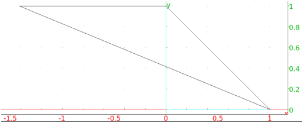
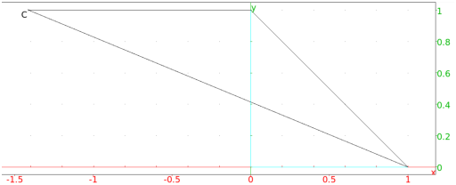

13.8.2 Isosceles triangles in the plane: isosceles_triangle
See Section 14.7.2 for isosceles triangles in space.
The isosceles_triangle command creates isosceles triangles.
-
isosceles_triangle takes three mandatory arguments
and one optional argument:
-
a,b, two points.
- θ, an angle.
- Optionally, var, a variable name.
- isosceles_triangle(a,b,θ ⟨var⟩)
returns and draws the isosceles triangle abc, where ab and
ac are equal sides and θ is the angle between ab and
ac.
With the argument var, c will be assigned to
var.
Examples
-
Input:
isosceles_triangle(i, 1, -3*pi/4)
Output:

- Input:
isosceles_triangle(i, 1, -3*pi/4,C)
Output:

Input:
normal(affix(C))
Output: